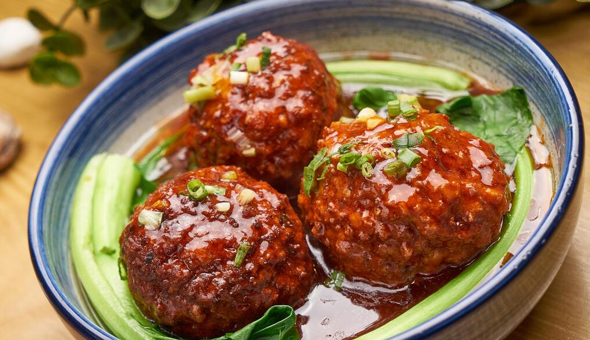

Chineses Meatball Recipe

Description
An authentic Lion’s head meatball recipe that uses breadcrumbs, water chestnuts, and aromatics to make super light, fluffy and juicy meatballs that are bursting with flavor.
Ingredients
Steps
- Prepare the meatballs
- Add ground pork into a large bowl. Add 4 tablespoons of water. Mix well with a spatula until water is fully incorporated.
- Add Shaoxing wine, light soy sauce, dark soy sauce, salt, sugar, grated ginger, cornstarch, and scallion. Mix well.
-
Add water chestnuts and eggs. Mix a few times. Then add panko. Mix well.
-
At the end, add sesame oil. Mix until it forms a soft paste.
- Cook the meatballs
- Steam the browned meatballs in batches. Heat water in a steamer until boiling. Place the plate of meatballs on the steaming rack and place the steaming rack onto the steamer. Cook covered until the meatballs are cooked through, 30 minutes or so.
- Cook the rest of the batches using the same method. After cooking the first batch, check the water level and add more if it runs too low. Serve hot as a main.